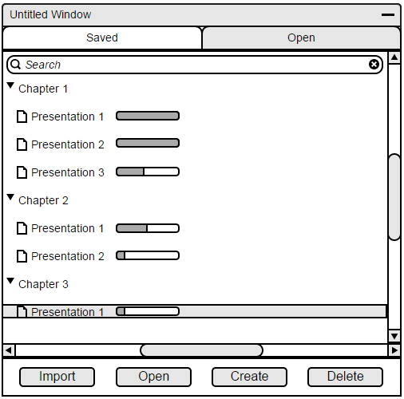
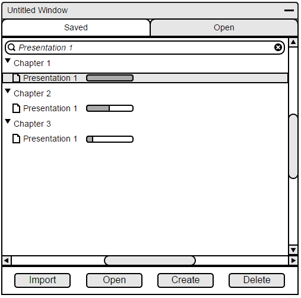
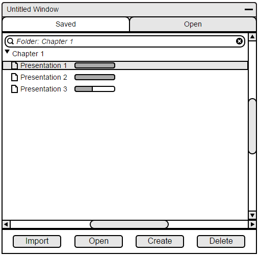
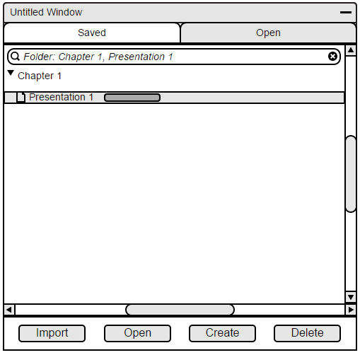

2.8.1 Searching for a Lecture File
The File Manager allows for a user to search for a specific file. The search bar is located at the top of the manager as shown in Figure 103. The user will use it by clicking on it and searching for a file or folder.

Figure 103: The File Manager
When a user selects the search bar, they will have the option of searching with three different methods. The first would simply be by the file name. If there is the same filename in multiple folders, then they will all appear in the search result as shown in Figure 104.

Figure 104: Searching for file
The user will also be able to search for a specific file. This will be done by appending "Folder:" to the search query. The result will display the found folder and all of its contents as shown in Figure 105.

Figure 105: Search for folder
Finally, the user will also be able to search by a specified folder and a filename. This will be distinguished by the folder key stated above, and the filename(s) following using a comma. A search can look like "Folder: Chapter 1, Presentation 1" as shown in Figure 106.

Figure 106: Search for file in a folder
Prev: [none]
| Next: Opening file
| Up: Viewing lectures remotely
| Top: index